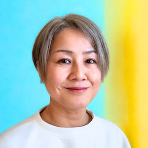
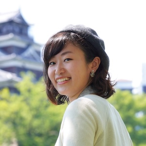

埼玉県川越市で開催する異業種交流会
少人数制で、じっくり話せるビジネス交流会です。 仕事術・働き方・挑戦中のことなどをテーマに、落ち着いた空間で交流します。

ライフコーチ/リーダーシップコーチ/研修講師
埼玉生まれ広島県出身。2年ごとに転校を繰り返す幼少期を過ごし、祭があって地域の結びつきが強い街への憧れから川越に移住。 上場企業リーダー層への1on1コーチングや経営者向けライフコーチングを生業としつつ、プライベートでは2児の母。 6歳の娘がダウン症を持つこともあり、「パレードのように、それぞれの人が『違うこと』が価値になる人生」を実現するために活動中。

エンジニア／タスク管理講師／まんが家
高知県出身、10年間の広島県を経て、現在は埼玉県在住。 月100時間超の残業を経験後、タスクシュートというタスク管理手法を活用し定時退社を実現。 現在は働き方やタスク管理について発信・執筆活動を行っています。 「安心して話せる場づくり」を大切に、交流会をサポートしています。